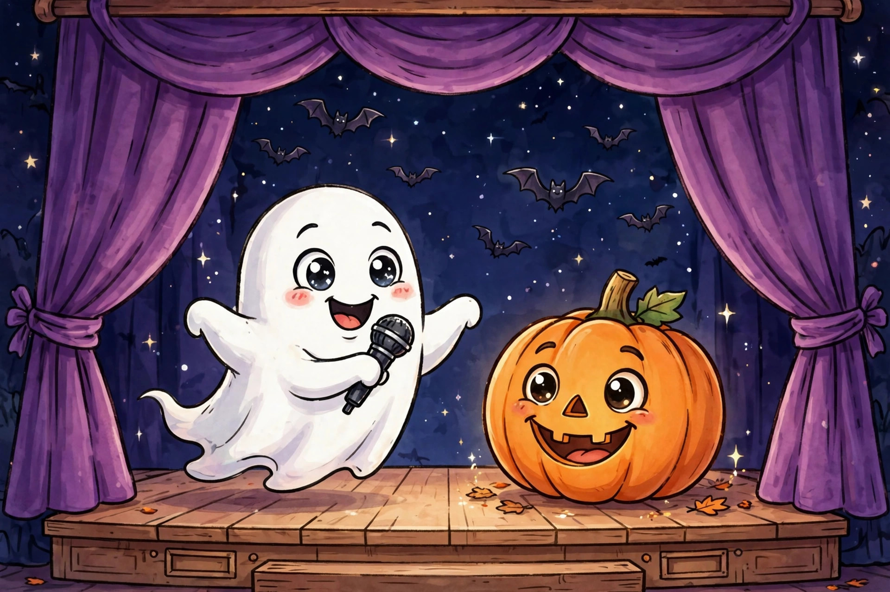

Halloween Jokes for Kids Ages 9–12

Halloween is peak joke season — but most Halloween joke lists are a mixed bag: some jokes are babyish, some are too gross, and none of them tell you which ones actually work for kids ages 9–12. We sorted through 550+ Halloween jokes from the biggest kid-focused lists on the internet and kept only the ones that hit the sweet spot: spooky enough to be fun, clean enough for the classroom, and clever enough that your friends won't see the punchline coming. Here they are, grouped by style.
Spooky one-liners
- Why did the skeleton skip the Halloween dance? He had no body to go with.
- What do you call a witch who lives at the beach? A sand-witch.
- Why are ghosts terrible liars? You can see right through them.
- What is a vampire's favorite fruit? A blood orange.
- Why did the mummy call in sick? He was all wound up.
- What do you get when you drop a pumpkin? Squash.
- What kind of music do mummies listen to? Wrap music.
- Why did the vampire need mouthwash? He had bat breath.
- What do you call two witches sharing an apartment? Broommates.
- Where do fashionable ghosts shop? Boo-tiques.
Halloween knock-knocks
- Knock, knock. Who's there? Boo. Boo who? Don't cry — it's just me in my costume!
- Knock, knock. Who's there? Witch. Witch who? Witch one of you took the last candy bar?
- Knock, knock. Who's there? Phillip. Phillip who? Phillip my bag with candy, please!
- Knock, knock. Who's there? Ivan. Ivan who? Ivan to eat all your Halloween candy!
- Knock, knock. Who's there? Howl. Howl who? Howl you know my costume is the best?
Riddle-style Halloween jokes
- What room does a ghost never need in its house? The living room.
- What is a monster's favorite game? Hide and shriek.
- What did the ghost teacher say to her class? "Look at the board, and I'll go through it again."
- Why did the zombie go to school? To improve his dead-ucation.
- How do monsters tell their future? They read their horror-scope.
- What does a vampire take when it gets sick? Coffin medicine.
- Why don't skeletons fight each other? They don't have the guts.
- What do you call a haunted chicken? A poultry-geist.
- What is a ghost's favorite dessert? I-scream.
Which joke for which moment
Not every joke fits every moment. Use this guide to pick the right one:
- Classroom or school party → one-liners. They're fast, they don't need a partner, and the teacher won't mind.
- Halloween party with friends → knock-knocks. They need a straight man (that's your friend), and the back-and-forth is half the fun.
- Trick-or-treating with family → riddle-style jokes. They're easy to tell while walking, and grandparents love a good groaner.
- Scaring your little sibling (nicely) → skip the jokes and just say "boo." Trust us.
- Lunchbox note or card → one-liners. Short, punchy, and they fit on a sticky note.
How to land the punchline
Great jokes told badly get groans; okay jokes told well get laughs. Three delivery tricks:
- Pause before the punchline. Ask the question, wait a full two seconds, then deliver the answer. The pause builds the laugh.
- Commit to the spooky voice. Witches cackle, vampires speak slowly, ghosts go "booo." A little acting doubles the funny.
- Never explain the joke. If someone doesn't get it, just grin and move on to the next one. Explaining a punchline is like dissecting a frog — you learn how it works, but the frog dies.
What success looks like: your audience laughs before you finish the punchline because they can see it coming and love it anyway. That's a joke told right.
Joke styles compared
| Style | Setup time | Needs a partner? | Best for |
|---|---|---|---|
| One-liners | None | No | Classroom, notes, quick laughs |
| Knock-knocks | Medium | Yes | Parties, performing for friends |
| Riddle-style | Short | No | Walking, family, stumping siblings |
Make your own spooky joke
The best Halloween jokes are just spooky words swapped into familiar phrases. Try the formula: pick a Halloween word (ghost, witch, pumpkin, bat, candy), then replace a similar-sounding word in an everyday phrase. "Boo-tiques" is "boutiques" with a ghost in it. "Sand-witch" is "sandwich" with a witch. "Wrap music" is "rap music" with a mummy. Once you spot the pattern, you'll start seeing spooky puns everywhere — and inventing your own is the best Halloween trick of all.
Done with Halloween? Try the riddles that'll stump your friends for year-round brain teasers.